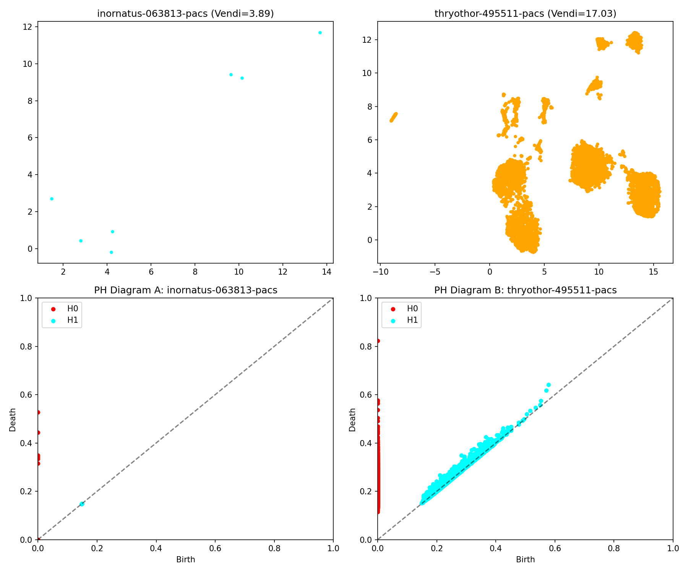

In this analysis, we compare two fundamentally different ways to measure diversity in medical image embeddings:
Entropy is a mathematical measure of uncertainty or unpredictability. Imagine a room: if everything is neatly arranged, the room is predictable — low entropy. If everything is scattered and chaotic, the entropy is high.
The Vendi Score uses this concept to measure how diverse a group of embeddings is. You can think of it like a panel of doctors: if they all give the same opinion, the group has low diversity (low entropy). But if their opinions diverge wildly, the discussion becomes unpredictable — high entropy, high Vendi Score.
These two approaches ask fundamentally different questions:
Sometimes, these two perspectives agree. But often, they don’t — and that’s where things get interesting. In medical imaging, a dataset may appear statistically similar but be topologically distinct, reflecting subtle differences in acquisition, anatomy, or pathology.
Both Vendi and PH suggest these two institutions produce nearly identical data. Their embedding distributions are statistically close (low entropy difference), and their topological signatures—capturing clusters and voids—are nearly indistinguishable.
In this example, both metrics confirm significant differences across datasets. The Vendi score captures broad entropy shifts, while PH diagrams reveal structural divergence— likely due to population differences, imaging protocols, or disease distributions.
This is the most revealing and clinically relevant case. The Vendi scores suggest the distributions are similar — same average entropy, same vector spread. But the PH diagrams tell a different story: topologically, the two datasets are quite distinct.
In practice, this could mean two datasets look statistically similar but vary in critical ways — such as abnormal morphology or imaging noise. Persistent homology helps expose these hidden differences.
In this final case, the topology of the datasets is nearly identical. Persistent homology diagrams reveal similar clusters and lifespans, suggesting comparable structural features.
But the Vendi scores tell another story: one dataset appears much more "diverse" in terms of statistical spread. This tells us that while the two datasets share the same shapes, the density and spread of those shapes differ.
This might occur, for example, if one institution uses tighter acquisition settings, resulting in more compact embeddings, while another’s data is more variable—even if both capture the same anatomical structures.
Vendi Score and Persistent Homology measure different aspects of diversity in embedding space:
While neither metric is universally better, they may capture complementary aspects of the data, depending on the context. In cases where statistical diversity appears similar, topological signals may still differ — and vice versa.
Using both together does not guarantee better performance, but it can offer a more nuanced view of embedding structure — especially in domains like medical imaging, where subtle differences may carry real-world significance.